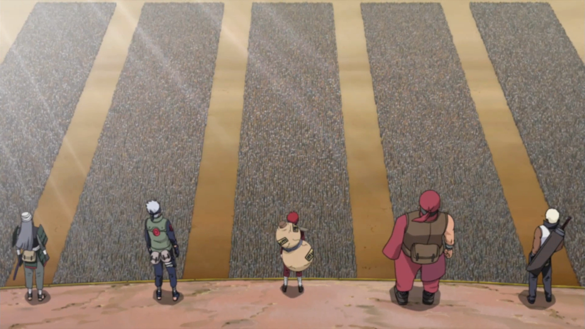
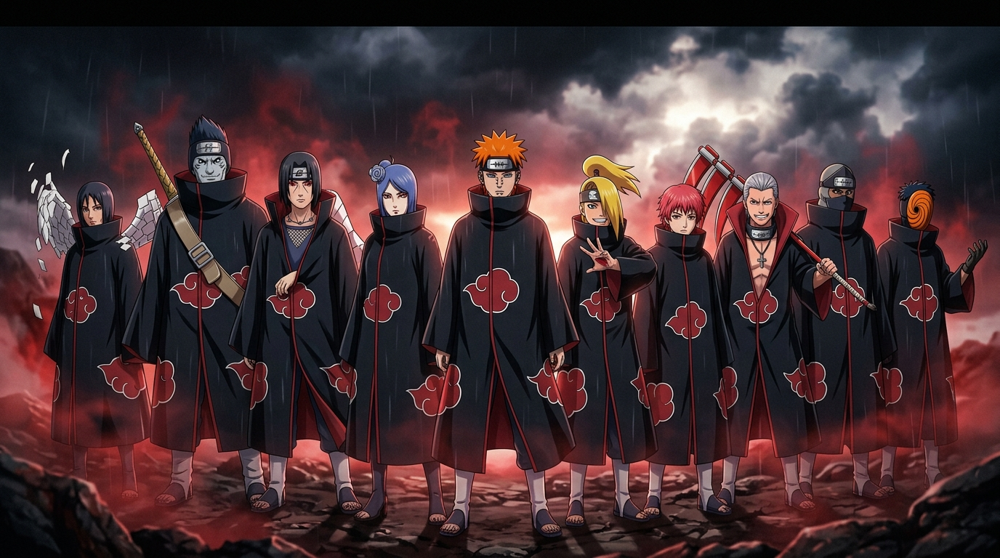
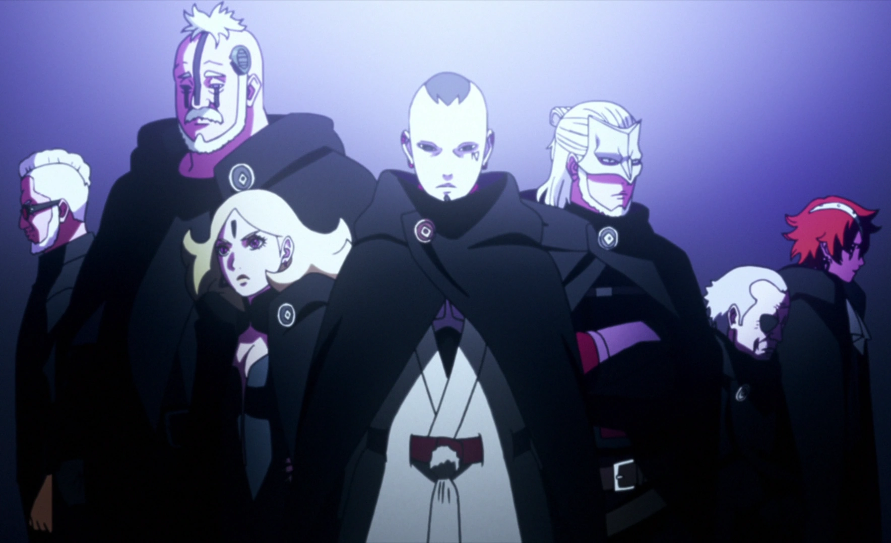
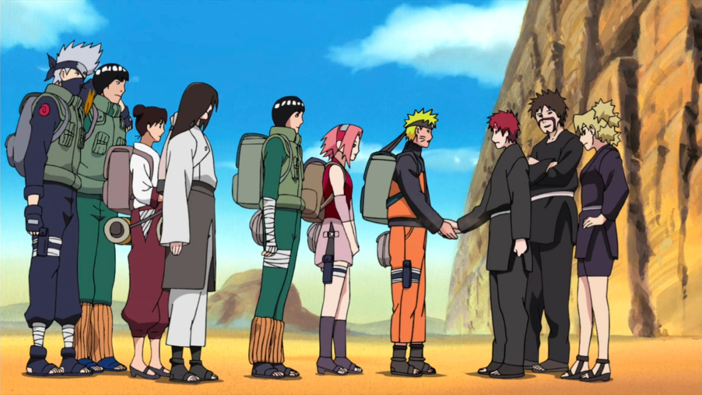
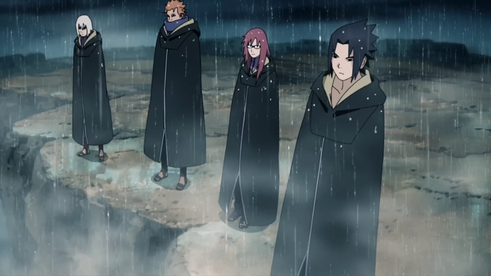
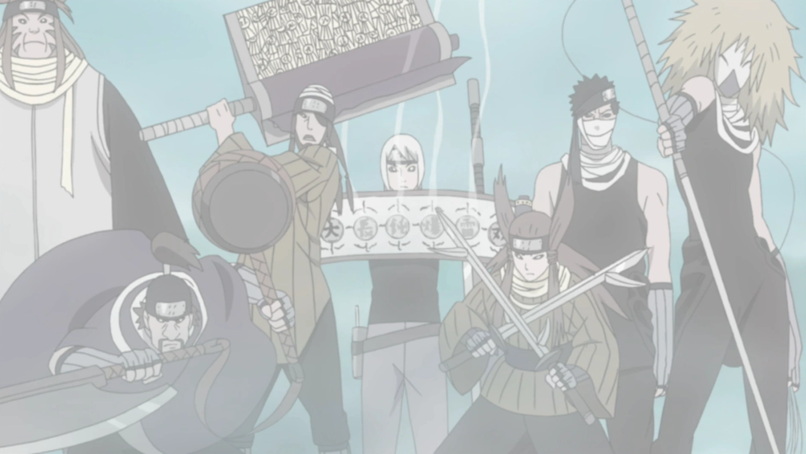

ALLIANCE
"FACTIONS THAT CHANGED THE SHINOBI WORLD"
A classified intelligence retrospective exploring the great military coalitions, global shadow syndicates, and legendary combat units that reshaped international warfare, balance of power, and historical destiny.

ALLIED SHINOBI FORCES
The grandest and most formidable military coalition in recorded shinobi history. Formed during the emergency Five Kage Summit to combat the existential threat of Tobi (Obito Uchiha), Kabuto Yakushi's Edo Tensei legions, and the Ten-Tails, this coalition marked the first time the Five Great Shinobi Nations united alongside the Land of Iron Samurai under a single banner and shared headband bearing the kanji for "Shinobi" (忍).
COALITION BASTIONS & PARTICIPATING POWERS
BATTLEFIELD DIVISION COMMANDERS

AKATSUKI
The most notorious and lethal criminal organization in modern ninja history. Originally founded in Amegakure by Yahiko, Nagato, and Konan as a pacifist coalition, it was subsequently co-opted and restructured into a mercenary syndicate composed of S-rank missing-nin from the major hidden villages, operating in two-man cells to systematically hunt and extract the Nine Tailed Beasts.
CORE S-RANK ROSTER & TWO-MAN CELLS

KARA
A secret, highly advanced syndicate operating during the Boruto era. Led by Jigen (the vessel of Isshiki Ōtsutsuki) and powered by the genius cybernetic engineering of Head Researcher Amado, Kara operated completely outside conventional chakra doctrine. Its core members possessed microscopic Shinobi-Ware modifications, regenerative cellular implants, and space-time transportation capabilities that posed a direct planetary threat to Naruto Uzumaki and Sasuke Uchiha.
KARA HIERARCHY & INNER CIRCLE

KONOHA–SUNA ALLIANCE
The most resilient bilateral alliance in modern geopolitical history. Following Orochimaru's deceitful Konoha Crush manipulation, the bond forged between Naruto Uzumaki and Gaara transformed two historical rivals into inseparable allies. This alliance provided critical reinforcements during the Sasuke Retrieval Mission, mutual support during the Kazekage Rescue, and laid the ideological groundwork for the Allied Shinobi Forces.
HIDDEN LEAF SECTOR
Contributed elite medical support, tactical strike squads, and reconnaissance divisions. Provided immediate emergency relief when Sunagakure was targeted by Akatsuki.
HIDDEN SAND SECTOR
Contributed desert vanguard combatants, master puppeteers (Kankurō), and gale-force wind battlers (Temari). Intercepted the Sound Four during the Sasuke retrieval crisis.
HISTORICAL TURNING POINTS
- Post-Invasion Reconciliation: Suna formally exposed the Sound's deceit and ratified a non-aggression pact.
- Sasuke Retrieval Interception: Suna siblings arrived to save Shikamaru, Kiba, and Rock Lee.
- Kazekage Rescue Deployment: Team Kakashi and Team Guy crossed borders to rescue Gaara from Akatsuki.

TAKA / HEBI
A compact, elite rogue strike squad formed by Sasuke Uchiha after severing ties with Orochimaru. Classified not as a world-scale military alliance, but as an autonomous high-lethality strike unit. Originally named Hebi (Snake) to hunt Itachi Uchiha, the unit transitioned to Taka (Hawk) after learning the truth of the Uchiha Clan massacre, briefly aligning with Akatsuki to assault the Five Kage Summit.
SQUAD ROSTER & COMBAT SPECIALTIES

SEVEN NINJA SWORDSMEN OF THE MIST
An elite martial order founded within Kirigakure consisting of the village's seven greatest bladed combatants. Passed down across bloody generations through brutal battlefield trials, each swordsman wielded one of the seven legendary swords forged to specialize in specific tactical slaughter, sensory destruction, and battlefield dismemberment.
THE SEVEN LEGENDARY BLADES
Regenerates from broken iron using the iron harvested directly from the blood of its victims.
Living sentient greatsword that shreds and consumes massive chakra reserves, capable of fusing with its wielder.
Slender rapier attached to indestructible steel wire, puncturing and stitching enemy lines together.
Axe and hammer combo designed to shatter any defensive shield, armor, or fortress wall.
Scroll-lined explosive broadsword combining physical cutting with devastating continuous detonations.
Twin lightning-imbued daggers claiming the title of the sharpest swords ever crafted.
Dual-handled blade capable of storing chakra and projecting gigantic blades, hammers, or needle constructs.
THE POWER INDEX MATRIX
A comparative qualitative assessment across military scale, individual threat tier, geopolitical influence, organizational discipline, and ultimate historical war impact.
| FACTION // 組織 | ORGANIZATION TYPE | MILITARY SCALE | INDIVIDUAL THREAT | GEOPOLITICAL INFLUENCE | WAR IMPACT |
|---|---|---|---|---|---|
| 01. ALLIED FORCES Five Nations + Samurai | Total Coalition | COLOSSAL (80K+) | HIGH (Five Kage Tier) | MAXIMUM (Planetary) | WORLD PRESERVATION |
| 02. AKATSUKI S-Rank Shadow Syndicate | Shadow Syndicate | ELITE CELL (10 Members) | CATASTROPHIC (S-Rank) | CONTINENTAL THREAT | TRIGGERED 4TH WAR |
| 03. KARA Cybernetic Coven (Boruto) | Cybernetic Cult | COVEN (Inners/Outers) | TRANSCENDENT (Ōtsutsuki) | GLOBAL COVERT | PLANETARY HARVEST CRISIS |
| 04. KONOHA × SUNA Leaf & Sand Diplomatic Pact | Bilateral Treaty | TWO MAJOR POWERS | HIGH (Hokage & Kazekage) | REGIONAL STABILITY | FOUNDATION OF ALLIANCE |
| 05. TAKA / HEBI Sasuke's Strike Unit | Strike Unit | COMPACT (4 Members) | EXTREME (Sasuke / Mangekyō) | TACTICAL DISRUPTION | KAGE SUMMIT ASSAULT |
| 06. SEVEN SWORDSMEN Mist Martial Order | State Martial Order | SPECIAL CORPS (7 Blades) | VERY HIGH (Master Swordsmen) | REGIONAL TERROR | BLOODY MIST HERITAGE |
"POWER IS NOT ALWAYS MEASURED BY NUMBERS."
From vast armies of eighty thousand to solitary rogue squads, the balance of the Shinobi World was forged through conviction, sacrifice, and the clash of unyielding wills.
VILLAGES ARCHIVE
Explore the Five Great Shinobi Nations, geopolitical bastions, and territories.
VIEW WORLD MAPCLANS CODEX
Discover the noble bloodlines, Kekkei Genkai, and ancestral clan legacies.
VIEW CLAN CODEXSHINOBI ARCHIVE
Inspect the complete intelligence dossier of 45 legendary shinobi records.
VIEW SHINOBI DOSSIER